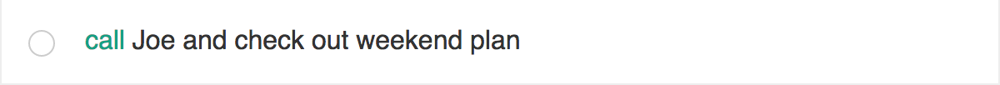
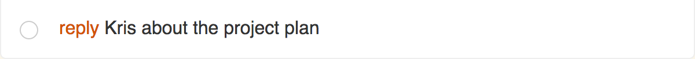
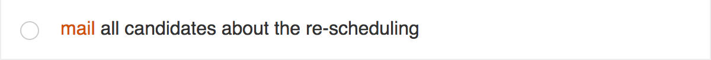
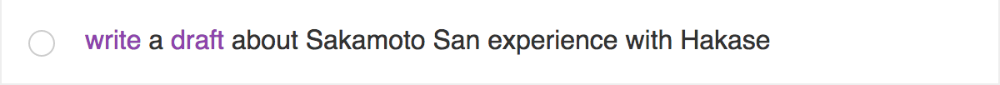
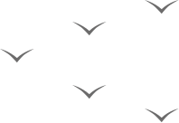

A simple to-do list for those who spend most of the day in front of the browser. No login, no big background image, just a simple Todo list. - version 1.0.0
“Identify your tasks faster
through activity based color coding”




This tool parses your task and looks for activities like call, meeting, reply, etc. and show it in different colours. This colour scheme will help you to traverse the list faster. Currently, the tool parses a standard set of activities which are listed below.
“Tips to make a better to-do”
To-do list helps you to offload tasks from your memory, but at the same time as the list grows it will make us gloomy. So we need to be smart building the task list.
First of all, make the to-do smaller. Because we only have limited time in a day to do it. If you have a big task on your plate, try to split it into small tasks. But when you are writing it, write it completely. Don't try to shorten it. e.g., instead of writing "call Peter", write "call Peter to finalise weekend plan". By the end of the day reevaluate your to-do list, remove the low priority tasks and add new tasks for the next day. And sleep peacefully!
“Made with love”
This tool is designed and developed by a triad called 27AE60 based out of Bengaluru, India. We as a team love developing tools and researching product ideas. We build this tool to keep us productive as well as you. Cheers!
